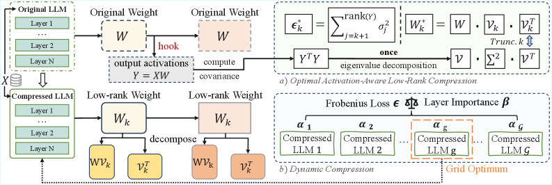
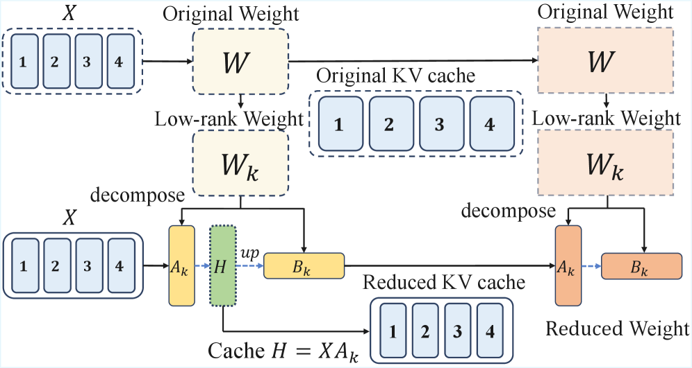

Why it matters왜 중요한가
The bottleneck of low-rank compression is not "can it be optimal" but "can it be optimal and cheap and stable — all at once."
저랭크 압축의 병목은 "최적일 수 있는가"가 아니라 "최적이면서 동시에 싸고 동시에 안정적일 수 있는가"다.
LLM deployment is squeezed by two memory costs: static weights and the growing KV cache. Low-rank compression is appealing — it keeps dense operators, stays hardware-friendly, and is orthogonal to quantization/pruning. But the field is stuck on a trade-off: methods that ignore activations are fast yet inaccurate, while activation-aware methods (SVD-LLM, Dobi-SVD) reach the theoretical optimum only via repeated SVDs or Cholesky factorization that break on non-positive-definite activation distributions and scale poorly. Swift-SVD reframes the problem so a single eigen-decomposition of the output-activation covariance yields the entire optimal solution spectrum — both the compressed weights and the loss for any rank — in one pass.
LLM 배포는 정적 가중치와 점점 커지는 KV 캐시라는 두 메모리 비용에 짓눌린다. 저랭크 압축은 매력적이다 — dense 연산을 유지하고, 하드웨어 친화적이며, 양자화·프루닝과 직교적이다. 그러나 이 분야는 trade-off에 갇혀 있다. 활성값을 무시하는 방법은 빠르지만 부정확하고, 활성값을 고려하는 방법(SVD-LLM, Dobi-SVD)은 반복 SVD나 Cholesky 분해를 통해서만 이론적 최적에 도달하는데, 이는 양정치(positive-definite)가 아닌 활성값 분포에서 붕괴하고 확장성이 나쁘다. Swift-SVD는 문제를 재정식화해, 출력 활성값 공분산에 대한 단 한 번의 고유분해로 — 압축 가중치와 임의 rank에서의 손실까지 — 전체 최적 해 스펙트럼을 한 번에 얻는다.

By the numbers핵심 숫자
compression vs baselines기준선 대비 종단간
압축 속도 향상
(no repeated SVD / Cholesky)고유분해 횟수
(반복 SVD·Cholesky 불필요)
min reconstruction loss이론적 최소
복원 손실과의 차이
evaluated평가한 LLM / 데이터셋
(9개 벤치마크)
(α = 0…1, grid search)rank 배분 후보
(α = 0…1 그리드 탐색)
(training-free)캘리브레이션 샘플 수
(학습 불필요)
Results — same accuracy, a fraction of the time결과 — 같은 정확도를 시간의 일부로
| Samples | Method | Total (s) | Speedup |
|---|---|---|---|
| 16 | Dobi-SVD(w/o) | 1,983 | 1.0× |
| 16 | Swift-SVD | 621 | 3.2× |
| 64 | Swift-SVD | 654 | 12.1× |
| 256 | SVD-LLM(W) | 2,213 | 14.3× |
| 256 | Swift-SVD | 753 | 42.1× |
| 512 | Swift-SVD | 827 | 76.9× |
In one diagram한 장의 그림
Idea: turn activation-aware SVD into a single eigen-problem아이디어: 활성값 인지 SVD를 단일 고유문제로
Closed-Form Spectral Solution
The activation-aware objective minₖ ‖XW − XWₖ‖_F has a clean answer: with the SVD of the output Y=XW=UΣVᵀ, the optimal weight is Wₖ* = W·VₖVₖᵀ and the loss is exactly (Σⱼ>ₖ σⱼ²)^½ — Eckart–Young optimal, no approximation.
활성값 인지 목적함수 minₖ ‖XW − XWₖ‖_F에는 깔끔한 답이 있다. 출력 Y=XW=UΣVᵀ의 SVD를 쓰면 최적 가중치는 Wₖ* = W·VₖVₖᵀ, 손실은 정확히 (Σⱼ>ₖ σⱼ²)^½ — Eckart–Young 최적이며 근사가 아니다.
Incremental Covariance Aggregation
Instead of SVD on the huge Y, it streams outer products yₜᵀyₜ into an n×n covariance C = YᵀY = VΣ²Vᵀ, then does one eigen-decomposition. Memory is n×n (not l×n), and it sidesteps Cholesky's positive-definite requirement — robust to ragged, padded calibration data.
거대한 Y에 SVD를 돌리는 대신, 외적 yₜᵀyₜ를 n×n 공분산 C = YᵀY = VΣ²Vᵀ에 스트리밍 누적한 뒤 고유분해를 한 번 수행한다. 메모리는 l×n이 아닌 n×n이며, Cholesky의 양정치 조건을 우회해 길이가 들쭉날쭉하거나 패딩된 캘리브레이션 데이터에도 견고하다.

How it works어떻게 작동하나
- Hook outputs, aggregate covariance출력 후킹·공분산 누적For each calibration batch, compute output y = xW and add the outer product yᵀy into an accumulating n×n covariance C — no full activations cached (Algorithm 1).각 캘리브레이션 배치마다 출력 y = xW를 계산하고 외적 yᵀy를 n×n 공분산 C에 누적한다 — 전체 활성값을 저장하지 않는다(Algorithm 1).
- One eigen-decomposition단일 고유분해Decompose C = VΣ²Vᵀ once. This gives Σ and V for the whole solution spectrum — the optimal Wₖ* = W·VₖVₖᵀ and loss εₖ* are read off for any rank k.C = VΣ²Vᵀ를 한 번 분해한다. 이로써 전체 해 스펙트럼의 Σ와 V를 얻어, 임의의 rank k에 대한 최적 Wₖ* = W·VₖVₖᵀ와 손실 εₖ*를 바로 읽어낸다.
- Score layers, allocate rank레이어 점수화·rank 배분Combine local loss εₖ* with end-to-end layer importance β via sᵢ = (βᵢ)^α·(log(e+εₖ,ᵢ*))^{1−α}; guarantee a minimal rank (δ=0.5) then distribute the budget by score (Algorithm 2).국소 손실 εₖ*와 종단간 레이어 중요도 β를 sᵢ = (βᵢ)^α·(log(e+εₖ,ᵢ*))^{1−α}로 결합한다. 최소 rank(δ=0.5)를 보장한 뒤 점수에 비례해 예산을 배분한다(Algorithm 2).
- Grid-search and pick그리드 탐색·선택Sweep α∈{0,0.1,…,1} for 11 candidates; since Σ,V are cached, each re-compression is near-free. Evaluate on a validation set and keep the best.α∈{0,0.1,…,1}를 훑어 11개 후보를 만든다. Σ,V가 캐싱돼 있어 각 재압축은 거의 무비용이다. 검증셋에서 평가해 최적 후보를 채택한다.
What to take away그래서, 가져갈 것
Optimality need not be slow. A single eigen-decomposition reaches the Eckart–Young optimum that rivals pay for with repeated SVDs — hence 3.2–76.9× faster compression.
최적이 곧 느림은 아니다. 단 한 번의 고유분해로, 경쟁 기법이 반복 SVD로 치르는 Eckart–Young 최적에 도달한다 — 그래서 3.2~76.9배 빠르다.
Compute once, reuse for any ratio. Caching Σ,V means switching from ρ=0.8 to 0.4 costs only a weight reload — ideal for serving under shifting memory budgets.
한 번 계산해 모든 압축비에 재사용. Σ,V 캐싱 덕에 ρ=0.8→0.4 전환이 가중치 재로딩만으로 끝난다 — 메모리 예산이 변하는 서빙에 이상적.
Importance ↔ compressibility are anti-correlated. Important layers tend to have lower effective rank, so a min-rank floor (δ=0.5) is needed to stop over-compressing them.
중요도와 압축성은 음의 상관. 중요한 레이어일수록 effective rank가 낮은 경향이 있어, 과압축을 막는 최소 rank 하한(δ=0.5)이 필요하다.
Numerically robust. It hits the theoretical minimum loss to +0.0000 across matrix sizes, where SVD-LLM and Dobi-SVD drift upward — no Cholesky positive-definite trap.
수치적으로 견고. 다양한 행렬 크기에서 이론적 최소 손실에 +0.0000로 도달한다 — SVD-LLM·Dobi-SVD가 위로 벗어나는 지점에서. Cholesky 양정치 함정도 없다.